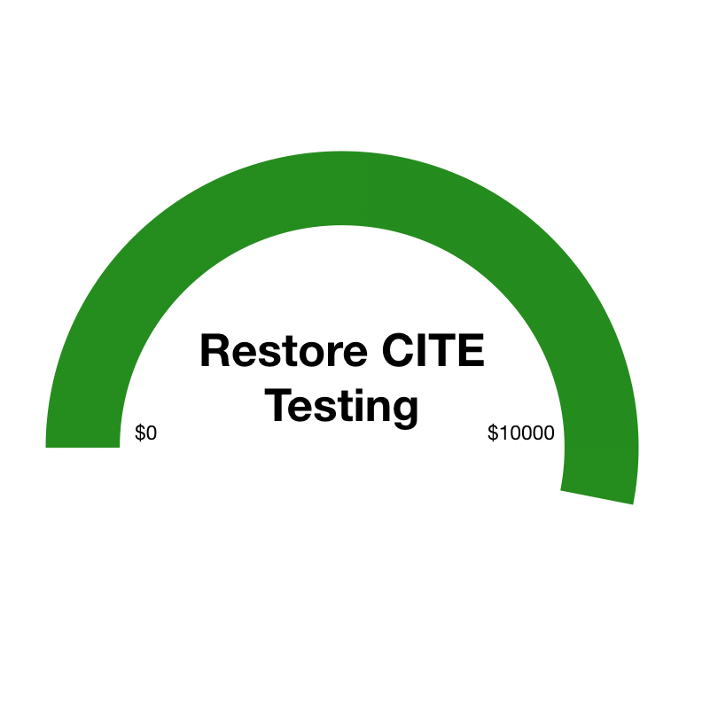

OGC Implementation
GeoServer implements industry standard OGC protocols such as Web Feature Service (WFS), Web Map Service (WMS), and Web Coverage Service (WCS). Additional formats and publication options are available as extensions including Web Processing Service (WPS), and Web Map Tile Service (WMTS).
GeoServer is working with the OSGeo Foundation to be certified as compliant and we need your help. We ask for your sponsorship or donation to integrate OGC testing into our nightly build. See blog post for details.
Part of a Vibrant Open Source Community
GeoServer is developed, tested, and supported as community-driven project by a diverse group of individuals and organizations around the world. We are proud to be a recognized Open Source Geospatial Foundation project.
GeoServer participates in the annual Free and Open Source Software for Geospatial conference, join us in Bucharest for FOSS4G 2019!